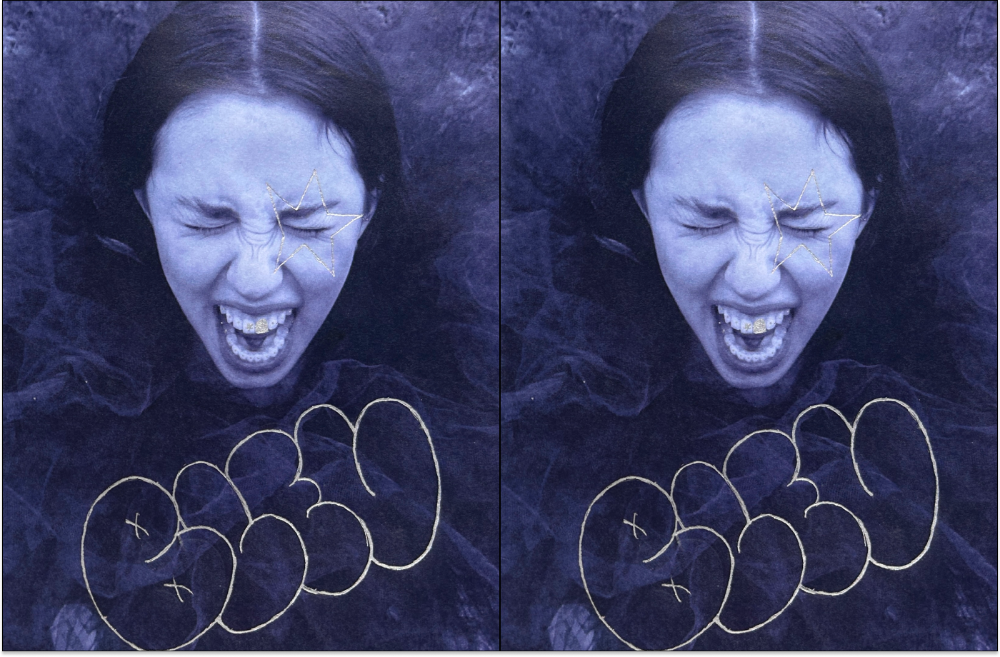
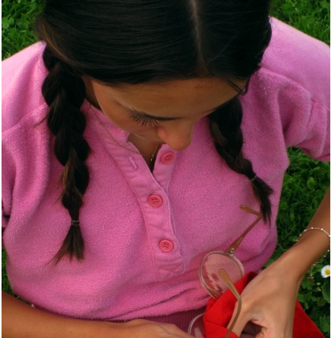
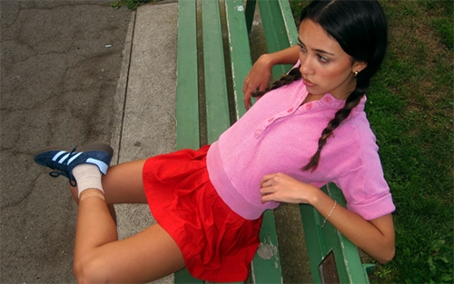
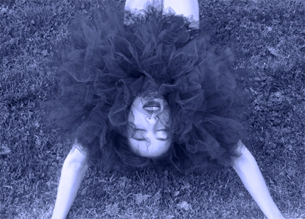
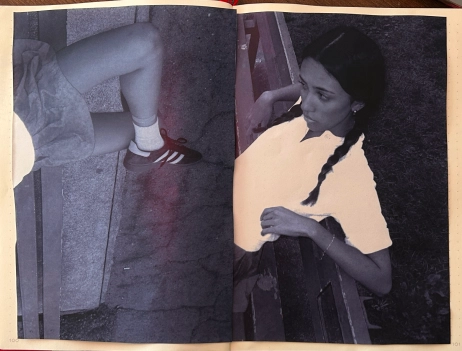

Project 1: Bleu

The concept of this shoot was to capture the contrast between synthetic fibers and the organic. As I dove deeper into this project, I found myself curious about the perception of form and color.
What seeing the world in blue means to me:
When we perceive something, it becomes once removed from what it actually is-- it becomes what we make it. When you add a camera to the mix, you become another step further from what the initial form is, as it adds another layer of manipulated perception-- similar to a Pygmalion theory. blue tint is meant to convey the alienating feeling of this concept, especially when you are the subject being perceived.

1

2
3

4
5
